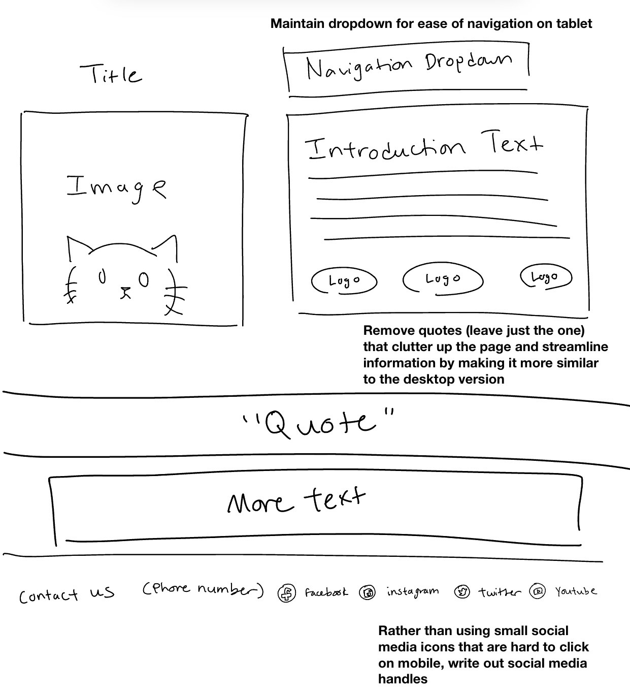

Project 2: Responsive Redesign
Part 1: Identifying Usability Problems

For this project, I set the goal of re-designing an existing website to be more streamlined, accessible, and responsive to different screen sizes. I chose the homepage for a private cat breeding business called Provenance Cats, because I have an interest in cats and felt the website left a lot to be desired, including the color palette I found hard on the eyes, as well as the overall cluttered look of the page: in my opinion, it is quite busy for an introductory home page.
Usability concerns
Before I actually began to plan my redesign, I identified a few usability concerns that I wanted to address. In particular:
- The website's desktop homepage doesn’t utilize space in the most efficient way, with a wide gap between the top of the page and the navigation bar itself. This is wasteful of the entire screen’s space and looks somewhat disorganized.
- The website's desktop homepage is cluttered, with repeated information throughout the introduction text and, in my opinion, an overwhelming amount of very similar images.
- The navigation bar has 13 total links, which I feel is excessive, because many of the categories seem similar (ie having separate pages for male and female cats, when they could both be combined on one page for just listing all the cats.)
- The desktop site also has an automatic music player, which feels very outdated and has the potential to startle anyone who views the website.
- The mobile homepage is strangely designed, with vastly different information from the desktop's homepage. On the mobile website, a large majority of the page is filled with various quotes about cats, while the desktop page lists more information about the business itself.
- On both pages (especially the mobile version, where it can be even more difficult to be precise), the social media logo icons are very small and difficult to click.
- The color scheme of the website is difficult to read in both formats: specifically, the saturated dark teal background makes the black text blend in.
Accessibility
WebAIM WAVE identified numerous accessibility issues with the website, including missing alternative text for images, contrast errors for text, and a lack of HTML structures including headers. I agree with WAVE’s findings in that I can imagine it would be very difficult for someone using a web reader to navigate this page. I also believe there are numerous other issues with the page that WAIVE wasn't able to identify: specifically, the contrast issue I previously identified of gray text against the teal backdrop.
Part 2: Visual Redesign
The next part of the project was brainstorming ideas for my redesign.
Speed sketches

I began with 9 speed sketches, each taking around a minute. I tried to incorporate different elements into each sketch and figure out which aspects I wanted to incorporate into my final design. From this step, I could synthesize elements of each design that I like to create and create a final sketch.
Final rough sketch
I wanted to have a single, main image on the page that could attract attention, and I also liked the look of having the introduction text to the right of this image (following the Z-pattern of eye movement we covered in class). I also preferred the look of having both a top and bottom bar, with the top one including navigation links and the bottom having contact information. I also added a decorative element to break up the information on the page, either a gallery (desktop) or a quote (tablet/mobile), which achieves a similar effect of having something to interest the viewer without cluttering the page.
Low-fidelity wireframes
From this final sketch, I created three wireframes for the desktop, mobile, and tablet versions of the site, annotating areas where I corrected the original site's flaws.
As you can see, I streamlined the desktop design by removing the automatic music player and condensing the number of links. I planned to do this thoughtfully by combining related pages and using dropdowns to group related information, and attempted to retain the quality of information presented by the site. I also opted to reduce the amount of text on the main page, as I felt the original's huge block of text is overwhelming to the viewer. Instead, I separated the text into two blocks divided by a decorative element. I also decided to reduce the number of images in the gallery of cats, as I felt the homepage was far too busy for an introduction to the business.


The mobile and tablet redesigns are more similar in nature, both featuring a dropdown instead of a traditional navigation bar for ease of tapping with fingers (which are less precise than a mouse). I also changed the social media links to listing out the handles, as I believe buttons would be too difficult to press on a smaller screen. I also opted to remove the various quotes from famous people about cats that was present on the original homepage, as I felt this was largely unrelated to the purpose of the page (introducing the business in a digestible way.)
Visual style guide
Then, I created a style guide to ensure consistency before I start on finalizing the designs. I brainstormed a color scheme, decided on icons I would use for the social media links, and standardized text sizes and fonts for my designs. I also finalized button and link hover behavior.

High-fidelity wireframes
With my design more finalized, I set out to create three high-fidelity wireframes for each design.


In both the tablet and mobile designs, the navigation bar is a dropdown instead of a series of links. This is to faciliate easier navigation on smaller screen sizes by offering larger buttons for users to press.
Part 3: Responsive Redesign
The link to my final redesigned page is here, and the Github repository is here.
Overall, I learned a lot about how to plan and structure a redesign, specifically how to translate original elements into a more cohesive product. It was a very valuable experience and a great way to brush up on HTML and CSS, and I am proud of the work I was able to get done.